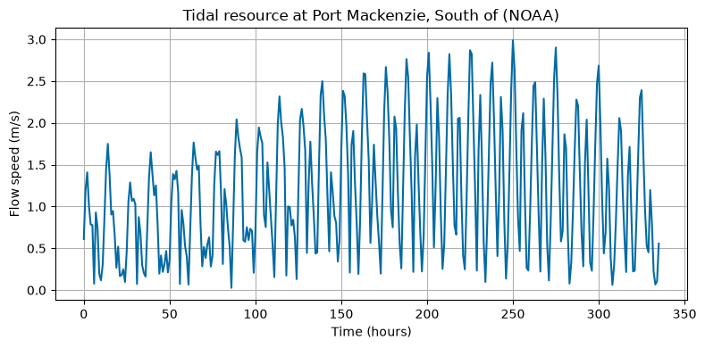
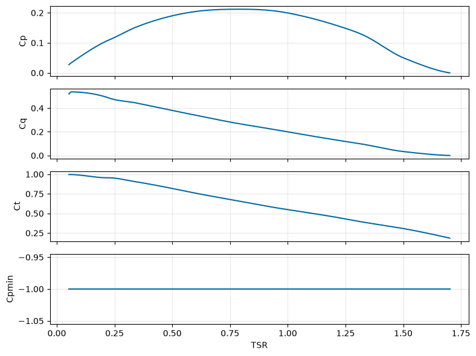
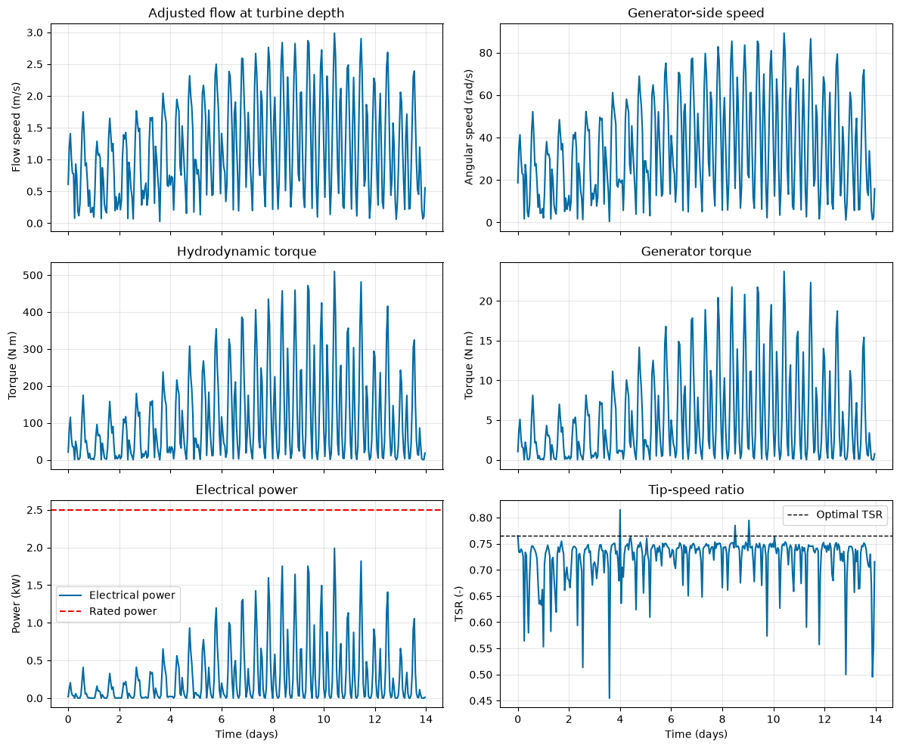
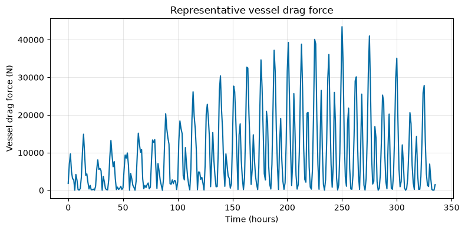

VITAL Quickstart Tutorial
This notebook provides a minimal end-to-end example of using VITAL to:
Load tidal resource data
Load rotor performance data
Simulate turbine performance
Check key constraints
Estimate levelized cost of energy (LCOE)
This tutorial is intended as a starting point for new users.
The example uses a representative Sitkana-style battery-charging configuration. More detailed module-specific tutorials and case studies are provided separately.
1. Imports
[1]:
import numpy as np
import matplotlib.pyplot as plt
from vital.module_tidal import process_tidal_data
from vital.module_rotor import RotorData
from vital.module_rotor_simulation import RotorSimulation
from vital.module_vessel import VesselData
from vital.module_constraint_checker import ConstraintChecker
from vital.module_lcoe import LCOEData, LCOECalculator
import urllib3
urllib3.disable_warnings(urllib3.exceptions.InsecureRequestWarning)
2. Load tidal resource data
This quickstart first attempts to retrieve tidal resource data from NOAA. If NOAA services are unavailable, the workflow can fall back to a local tidal data file.
For this example, both the NOAA station and local fallback dataset correspond to station COI0303 near Port Mackenzie.
The local fallback file should contain at least two columns:
t: time in secondsU: flow speed in m/s
Note that the local file is only used if NOAA retrieval fails. If NOAA succeeds, tidal.source will be "NOAA" even when local_file and fallback_metadata are provided.
[2]:
# Load tidal data from NOAA, with a local fallback for reproducibility.
tidal = process_tidal_data(
station="COI0303", # NOAA station ID
startdate="2021-09-01", # Start date, YYYY-MM-DD
range_hrs=14 * 24, # 14 days
time_step_s=3600, # 1-hour time step
city_data_file="../data/AlaskaCityLatLong.txt",
local_file="../data/TidalData/COI0303_20210901.txt",
fallback_metadata={
"station_name": "COI0303",
"nearest_city": "Port Mackenzie",
"latitude_deg": 61.2522,
"longitude_deg": -149.9207,
"mooring_distance_m": 50.0,
"cable_length_m": 1000.0,
},
)
print("Data source:", tidal.source)
if tidal.source == "local_file":
print("NOAA retrieval failed; local fallback file was used.")
else:
print("NOAA retrieval succeeded; local fallback file was not used.")
print("Station name:", tidal.station_name)
print("Nearest city:", tidal.nearest_city)
print("Mooring distance (m):", tidal.mooring_distance)
print("Cable length (m):", tidal.cable_length)
print("Latitude (deg):", np.degrees(tidal.latitude))
print("Longitude (deg):", np.degrees(tidal.longitude))
print("Number of time points:", len(tidal.times))
print("First 5 flow speeds:", tidal.flow_speeds[:5])
# Plot flow speed over time.
plt.figure(figsize=(8, 4))
plt.plot(tidal.times / 3600, tidal.flow_speeds)
plt.xlabel("Time (hours)")
plt.ylabel("Flow speed (m/s)")
plt.title(f"Tidal resource at {tidal.station_name} ({tidal.source})")
plt.grid(True)
plt.tight_layout()
plt.show()
Data source: NOAA
NOAA retrieval succeeded; local fallback file was not used.
Station name: Port Mackenzie, South of
Nearest city: Anchorage
Mooring distance (m): 31.1
Cable length (m): 3970.22
Latitude (deg): 61.25225
Longitude (deg): -149.92067000000003
Number of time points: 336
First 5 flow speeds: [0.61117 1.19754 1.40836 1.00678 0.78511]

3. Load and visualize rotor performance data
The rotor performance file provides:
TSR: tip-speed ratioCt: thrust coefficientCq: torque coefficient
VITAL computes the power coefficient internally as:
If no Cpmin file is supplied, VITAL assumes:
The code below loads the rotor data, prints key summary values, and visualizes the performance curves over the measured TSR range.
[3]:
# Load rotor performance data.
rotor = RotorData(
filename="../data/Sitkana_rotor_data_blade_2.txt",
)
print(f"Optimal Cp: {rotor.CpOpt:.4f}")
print(f"Optimal TSR: {rotor.TSROpt:.4f}")
print(f"Estimated TSRmax: {rotor.TSRmax:.4f}")
print(f"Measured TSR range: {rotor.tsr.min():.4f} to {rotor.tsr.max():.4f}")
# Plot over the measured TSR range.
tsr_vals = np.linspace(rotor.tsr.min(), rotor.tsr.max(), 200)
fig, ax = plt.subplots(4, 1, figsize=(8, 6), sharex=True)
ax[0].plot(tsr_vals, rotor.get_cp(tsr_vals))
ax[0].set_ylabel("Cp")
ax[0].grid(True, alpha=0.3)
ax[1].plot(tsr_vals, rotor.get_cq(tsr_vals))
ax[1].set_ylabel("Cq")
ax[1].grid(True, alpha=0.3)
ax[2].plot(tsr_vals, rotor.get_ct(tsr_vals))
ax[2].set_ylabel("Ct")
ax[2].grid(True, alpha=0.3)
ax[3].plot(tsr_vals, rotor.get_cpmin(tsr_vals))
ax[3].set_ylabel("Cpmin")
ax[3].set_xlabel("TSR")
ax[3].grid(True, alpha=0.3)
plt.tight_layout()
plt.show()
Optimal Cp: 0.2119
Optimal TSR: 0.7648
Estimated TSRmax: 1.7084
Measured TSR range: 0.0526 to 1.7015

4. Define turbine configuration
This example uses a simple baseline turbine configuration for demonstration. The configuration below connects the tidal resource and rotor performance data to the rotor simulation model.
This quickstart uses the built-in simple power-conversion model, which requires the generator constants Kt and Rw.
[4]:
# Define a simple turbine configuration for the quickstart example.
config = {
# Turbine geometry and rating
"Radius": 0.5, # Rotor radius (m)
"Prated": 2500.0, # Rated electrical power per turbine (W)
"Trated": np.inf, # Rated generator torque (N m)
"dHub": 2.0, # Hub depth (m)
"number_of_turbines": 2,
# Site/time inputs from tidal data
"dMoor": tidal.mooring_distance,
"Uinf": tidal.flow_speeds,
"t": tidal.times,
# Rotor performance functions
"CpFunc": rotor.get_cp,
"CqFunc": rotor.get_cq,
"CtFunc": rotor.get_ct,
"CpOpt": rotor.CpOpt,
"TSROpt": rotor.TSROpt,
"TSRmax": rotor.TSRmax,
# Drivetrain and generator parameters
"Ng": 20, # Gear ratio between rotor and generator (-)
"Kt": 1.5, # Generator torque constant for simple electrical model (N m/A)
"Rw": 0.5, # Generator winding resistance for simple electrical model (ohm)
"J_d": 1.0, # Drivetrain/generator-side inertia (kg m^2)
"B_d": 0.01, # Drivetrain damping/friction coefficient (N m s/rad)
"J_r": 10.0, # Rotor inertia (kg m^2)
# Built-in simple electrical model
"power_model": "simple",
}
print("Turbine configuration defined.")
print(f"Radius: {config['Radius']} m")
print(f"Rated power: {config['Prated']} W")
print(f"Hub depth: {config['dHub']} m")
print(f"Number of turbines: {config['number_of_turbines']}")
Turbine configuration defined.
Radius: 0.5 m
Rated power: 2500.0 W
Hub depth: 2.0 m
Number of turbines: 2
5. Run rotor simulation and visualize outputs
The rotor simulation uses the tidal resource, rotor performance curves, and turbine configuration to estimate turbine speed, torque, thrust, and power over time. The plots below summarize the main simulation outputs.
For the simple power model, Pelec is the electrical power output from the built-in generator model.
[5]:
# Create and run the rotor simulation.
rotor_sim = RotorSimulation(config)
rotor_sim.simulate()
result = rotor_sim.get_results()
print("Rotor simulation complete.")
print("Available result keys:", list(result.keys()))
# Convert simulation time from seconds to days for plotting.
time_days = result["t"] / (24 * 3600)
fig, ax = plt.subplots(3, 2, figsize=(12, 10), sharex=True)
# Adjusted flow speed at turbine depth.
ax[0, 0].plot(time_days, result["Uinf_adjusted"])
ax[0, 0].set_ylabel("Flow speed (m/s)")
ax[0, 0].set_title("Adjusted flow at turbine depth")
ax[0, 0].grid(True, alpha=0.3)
# Generator-side angular speed.
ax[0, 1].plot(time_days, result["w"])
ax[0, 1].set_ylabel("Angular speed (rad/s)")
ax[0, 1].set_title("Generator-side speed")
ax[0, 1].grid(True, alpha=0.3)
# Hydrodynamic torque from the rotor.
ax[1, 0].plot(time_days, result["Th"])
ax[1, 0].set_ylabel("Torque (N m)")
ax[1, 0].set_title("Hydrodynamic torque")
ax[1, 0].grid(True, alpha=0.3)
# Generator torque applied by the controller.
ax[1, 1].plot(time_days, result["Tg"])
ax[1, 1].set_ylabel("Torque (N m)")
ax[1, 1].set_title("Generator torque")
ax[1, 1].grid(True, alpha=0.3)
# Electrical power from the simple generator model.
ax[2, 0].plot(time_days, result["Pelec"] / 1000, label="Electrical power")
ax[2, 0].axhline(
config["Prated"] / 1000,
color="r",
linestyle="--",
label="Rated power",
)
ax[2, 0].set_ylabel("Power (kW)")
ax[2, 0].set_title("Electrical power")
ax[2, 0].set_xlabel("Time (days)")
ax[2, 0].grid(True, alpha=0.3)
ax[2, 0].legend()
# Tip-speed ratio.
ax[2, 1].plot(time_days, result["TSR"])
ax[2, 1].axhline(
config["TSROpt"],
color="k",
linestyle="--",
linewidth=1,
label="Optimal TSR",
)
ax[2, 1].set_ylabel("TSR (-)")
ax[2, 1].set_title("Tip-speed ratio")
ax[2, 1].set_xlabel("Time (days)")
ax[2, 1].grid(True, alpha=0.3)
ax[2, 1].legend()
plt.tight_layout()
plt.show()
Solving the initial value problem (IVP) for turbine dynamics...
IVP solving complete.
Rotor simulation complete.
Available result keys: ['t', 'w', 'wr', 'Tg', 'TSR', 'Ft', 'Th', 'dHub', 'Uinf_adjusted', 'Phydro', 'Pfluid', 'Punc', 'Pmech', 'Pelec', 'Pac', 'Pbat', 'Pgen_loss', 'Ppe_loss', 'Iq', 'Vq', 'power_model']

6. Define representative vessel properties
The vessel properties below represent a simplified, user-defined example for constraint checking and LCOE estimation. Users may replace these values with site- or vessel-specific data.
[6]:
# Define representative vessel/platform properties for drag and pitch checks.
user_vessel_properties = {
"Xm": 5.77, # Horizontal force-application distance (m)
"Zm": 1.65, # Vertical force-application distance (m)
"Kphi": 1.95e6, # Pitch hydrostatic stiffness (N m/rad)
"theta": np.deg2rad(45.0), # Mooring line angle (rad)
"phi": np.deg2rad(20.0), # Representative pitch angle (rad)
"area": 9.5, # Projected/cross-sectional area (m^2)
"Cd": 1.0, # Drag coefficient (-)
}
# Create vessel object and compute drag using adjusted flow from the simulation.
vessel = VesselData(
user_defined=True,
vessel_properties=user_vessel_properties,
simResult=result,
)
print(f"Maximum vessel drag force: {np.max(vessel.Fdrag):.2f} N")
print(f"Mean vessel drag force: {np.mean(vessel.Fdrag):.2f} N")
# Plot vessel drag over time.
plt.figure(figsize=(8, 4))
plt.plot(result["t"] / 3600, vessel.Fdrag)
plt.xlabel("Time (hours)")
plt.ylabel("Vessel drag force (N)")
plt.title("Representative vessel drag force")
plt.grid(True, alpha=0.3)
plt.tight_layout()
plt.show()
Maximum vessel drag force: 43473.27 N
Mean vessel drag force: 9434.72 N

7. Check constraints
The constraint checker evaluates whether the turbine and vessel configuration satisfies key operating limits, including power, depth, cavitation, and pitch stability constraints.
[7]:
# Check whether the simulated design satisfies key operating constraints.
constraint_checker = ConstraintChecker(rotor, config, vessel, result)
constraints = {
"Power Constraint": constraint_checker.check_power_constraint(), # 0 <= Pelec <= Prated
"Depth Constraint": constraint_checker.check_depth_constraint(), # dHub - Radius > 0
"Cavitation Constraint": constraint_checker.check_cavitation_constraint(),
"Pitch Constraint": constraint_checker.check_pitch_constraint(),
}
print("Constraint Results:")
for name, satisfied in constraints.items():
status = "Satisfied" if satisfied else "Not Satisfied"
print(f" {name}: {status}")
# Print margins to show how close the design is to each constraint limit.
print()
print("Constraint margins:")
print(f" Minimum power margin, Prated - Pelec: {np.min(constraint_checker.power_constraint()):.3f} W")
print(f" Depth margin, dHub - Radius: {constraint_checker.depth_constraint():.3f} m")
print(f" Minimum cavitation margin: {np.min(constraint_checker.cavitation_constraint()):.3f} Pa")
print(f" Minimum pitch margin: {np.min(constraint_checker.pitch_constraint()):.3f} N m")
if not all(constraints.values()):
print()
print(
"Warning: One or more constraints are not satisfied. "
"LCOE can still be calculated, but the design should be treated as infeasible."
)
Constraint Results:
Power Constraint: Satisfied
Depth Constraint: Satisfied
Cavitation Constraint: Satisfied
Pitch Constraint: Satisfied
Constraint margins:
Minimum power margin, Prated - Pelec: 509.993 W
Depth margin, dHub - Radius: 1.500 m
Minimum cavitation margin: 106203.707 Pa
Minimum pitch margin: 417182.893 N m
8. Estimate LCOE
The LCOE calculation combines the tidal resource, turbine configuration, vessel properties, and simulation results to estimate annual energy production and levelized cost of energy.
This quickstart uses:
customer = "customer_B"
application = "battery_charging"
BatteryCapacity_kWh = 10.0
Because this is a battery-charging application, BatteryCapacity_kWh must be provided and must be greater than zero.
[8]:
# Create the LCOE input data object.
data = LCOEData(
tidalData=tidal,
turbineConfig=config,
vesselData=vessel,
simResult=result,
lifetime=10, # Project lifetime (years)
discount_rate=0.1, # Discount rate (-)
turbulence_intensity=0.0, # Turbulence intensity (-)
customer="customer_B", # Cost configuration
application="battery_charging", # Application type
BatteryCapacity_kWh=10.0, # Battery capacity (kWh)
)
# Calculate cost and energy metrics.
calculator = LCOECalculator(data)
total_capex = calculator.calculate_total_capex() # USD
total_opex = calculator.calculate_total_opex(total_capex) # USD/year
annual_energy = calculator.calculate_annual_energy() # kWh/year
lcoe = calculator.calculate_lcoe() # USD/kWh
print(f"LCOE: ${lcoe:.4f}/kWh")
print(f"Annual energy: {annual_energy:.2f} kWh/year")
print(f"Total CAPEX: ${total_capex:,.2f}")
print(f"Total OPEX: ${total_opex:,.2f} per year")
LCOE: $0.2111/kWh
Annual energy: 4956.16 kWh/year
Total CAPEX: $5,161.54
Total OPEX: $206.46 per year
9. Show cost breakdown
The cost breakdown shows the main CAPEX and OPEX components used in the LCOE calculation, along with the annual energy estimate.
[9]:
calculator.list_capex()
calculator.list_opex(total_capex)
calculator.list_annual_energy()
CAPEX Components:
anchor_cost: $206.31
gearbox_cost: $593.10
concrete_cost: $27.53
assembly_cost: $462.00
generator_cost: $1316.50
rotor_cost: $3.55
steel_component_cost: $220.36
rotor_construction_cost: $6.59
battery_cost: $1500.00
charge_controller_cost: $825.60
Total component CAPEX: $5161.54
Adjustment factor: 1.00
Adjusted CAPEX: $5161.54
OPEX Components:
SITKANA Operating Cost: $206.46
Total OPEX: $206.46
Annual Energy Generation: 4956.16 kWh
10. Summary
This tutorial demonstrated a basic VITAL workflow, including:
loading and using resource data
loading and visualizing rotor performance curves
running a turbine simulation using a representative configuration
checking vessel and operating constraints
estimating LCOE and reporting cost breakdowns
This workflow is designed to be adaptable to different resource sites, rotor performance curves, vessel configurations, and cost-model assumptions.